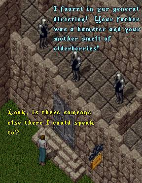

 |
OK! OK! So I couldn't resist another cheap Monty
Python sketch rip-off ... So Sue Me! Anyway, I
know you are all anxious to see the momentous
moment when ImaNewbie comes face-to-face with
Tryon, his creator, so we'll just skip ahead to
the next scene. As this scene opens Tryon has
come upon another keep, and checking the sign
discovers that it is indeed the infamous Convent
where ImaNewbie is being held captive.
ACK! (insert suspensful music here)
The Sisters Have Returned!